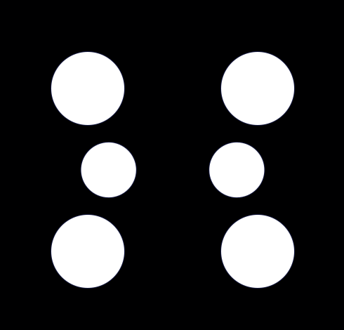

Comisiones

Comisión académica
| Líder: | Nolasco Ramírez |
|---|---|
| Funciones: | Coordinación entre carreras, facultades o universidades para actividades entre estudiantes, elaboración de labores de investigación, planificación de eventos académicos que incluyan estudiantes o profesores (exposición, ponencias, talleres, debates, seminarios, entre otros). |
| Cantidad de miembros: | 11 |
| Cantidad de invitados: | 5 |
Comisión de comunicación
| Líder: | María Pérez |
|---|---|
| Funciones: | Coordinación entre carreras, facultades o universidades para actividades entre estudiantes, elaboración de labores de investigación, planificación de eventos académicos que incluyan estudiantes o profesores (exposición, ponencias, talleres, debates, seminarios, entre otros). |
| Cantidad de miembros: | 8 |
| Cantidad de invitados: | 3 |
Comisión de relaciones externas
| Líder: | Carlos Díaz |
|---|---|
| Funciones: | Coordinación entre carreras, facultades o universidades para actividades entre estudiantes, elaboración de labores de investigación, planificación de eventos académicos que incluyan estudiantes o profesores (exposición, ponencias, talleres, debates, seminarios, entre otros). |
| Cantidad de miembros: | 10 |
| Cantidad de invitados: | 4 |
Comisión de eventos
| Líder: | Lucía Torres |
|---|---|
| Funciones: | Coordinación entre carreras, facultades o universidades para actividades entre estudiantes, elaboración de labores de investigación, planificación de eventos académicos que incluyan estudiantes o profesores (exposición, ponencias, talleres, debates, seminarios, entre otros). |
| Cantidad de miembros: | 12 |
| Cantidad de invitados: | 6 |
Comisión de divulgación
| Líder: | Lucía Torres |
|---|---|
| Funciones: | Coordinación entre carreras, facultades o universidades para actividades entre estudiantes, elaboración de labores de investigación, planificación de eventos académicos que incluyan estudiantes o profesores (exposición, ponencias, talleres, debates, seminarios, entre otros). |
| Cantidad de miembros: | 12 |
| Cantidad de invitados: | 6 |
Comisión de programación
| Líder: | Lucía Torres |
|---|---|
| Funciones: | Coordinación entre carreras, facultades o universidades para actividades entre estudiantes, elaboración de labores de investigación, planificación de eventos académicos que incluyan estudiantes o profesores (exposición, ponencias, talleres, debates, seminarios, entre otros). SKEREEEEEEE |
| Cantidad de miembros: | 12 |
| Cantidad de invitados: | 6 |